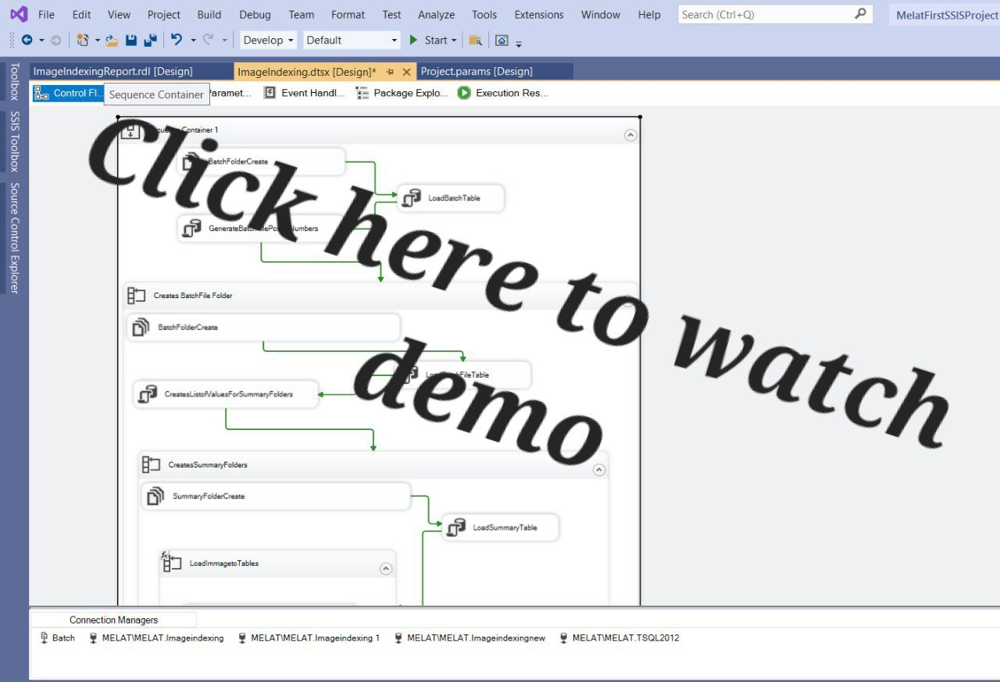
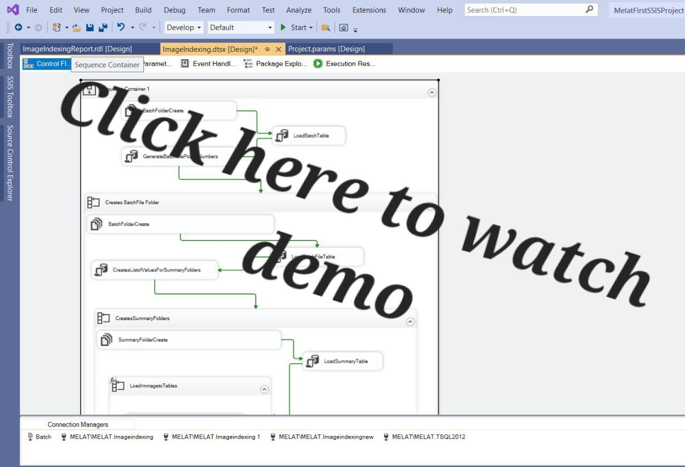

In this project, I explored the Nashville housing data, focusing on data cleaning and preparation. I performed tasks such as splitting columns into individual components, creating and populating new columns, updating existing columns, checking for duplicates, and deleting unnecessary columns. This thorough data cleaning process ensured the dataset was accurate and ready for detailed analysis.
 

This project automates the organization and retrieval of images by creating a structured file system and storing data in a SQL database. The project automatically creates a hierarchical file structure, organizes image files with meaningful names, and stores the image details in a database. Then, an SSRS report can extract specific images without needing to manually search for them.
In this project, I explored COVID-19 data using SQL to uncover insights and trends. By performing tasks such as querying, creating Common Table Expressions (CTEs), using views, and joining tables, I was able to analyze critical metrics. This comprehensive data exploration laid the foundation for a subsequent Tableau visualization project, providing a deeper understanding of the pandemic's impact.

This Tableau project visualizes key COVID-19 statistics, offering insights into the pandemic's global impact. It features maps showing infection rates by country, bar charts comparing total deaths across continents, and line graphs depicting global infection trends over time.
This SQL project uses a MERGE statement to synchronize data between a source table and a historical target table. It efficiently updates records, adds new entries, and marks missing records as deleted, maintaining data accuracy and history. The process captures changes in account balances, statuses, and other details, providing a full audit trail of updates, deletions, and additions.